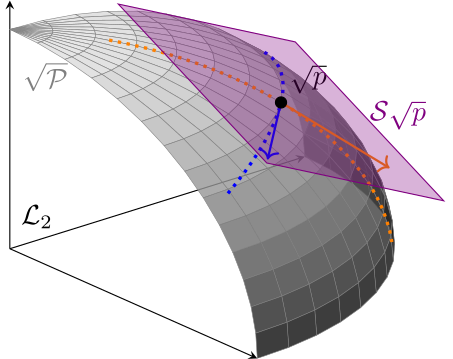
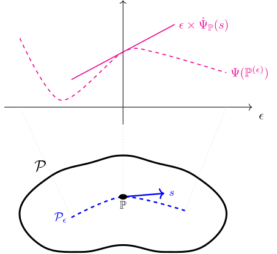

3 The Efficient Influence Function
In Chapter 1 we defined asymptotic linearity (AL) and discussed why AL estimators are nice: they are asymptotically unbiased, are easy to do inference for, and can be (asymptotically) compared by looking at their influence functions. In Chapter 2 we argued that we should further restrict the class of desireable estimators to those that are regular so that bad finite-sample behavior can’t be hidden in the asymptotic comparisons. In this chapter we will establish the central result of efficiency theory: in any model where the estimand varies smoothly enough over the different distributions, there is a best-possible regular asymptotically linear (RAL) estimator.
Really what we’ll prove is that there is a best-possible influence function: multiple estimators may have that influence function but by virtue of that fact they will behave similarly in large-enough samples. We call the best-possible influence function the efficient influence function (EIF). The EIF sets a limit on how good any RAL estimator can be at estimating some estimand in a some model. If you have a RAL estimator with that influence function, you can rest assured that it is the best you can do (asymptotically).
In this chapter we will prove our central result and discuss some important implications. In the next chapter we’ll show how to derive the EIF in the most common scenarios. After that, in the last part of the book, we will demonstrate how to use knowledge of the EIF to construct efficient estimators.
3.1 Characterizing Influence Functions
Not every possible function corresponds to a valid RAL estimator of an estimand in a particular statistical model. Clearly it would be wonderful if we could find a RAL estimator with \(\phi(z) = 0\) because this estimator would have no variance at all in large samples. But if that were possible, statistics would be easy. So \(\phi(z) = 0\) must not be an influence function for any sensible estimand in any sensible model. So, for a given estimand and statistical model, what functions are influence functions of RAL estimators, and what functions aren’t?
We already know that any regular estimator by definition behaves in a particular way asymptotically along a quickly-converging sequence of distributions. Remarkably, it turns out that asymptotic linearity also implies specific asymptotic behavior along a subset of these sequences.
This is remarkable because asymptotic linearity is a pointwise property: it describes only what happens if the estimator is evaluated with more and more data sampled from the same distribution. By itself it says nothing about what would happen if we also changed that distribution while letting \(n\) grow. But if we take into account differentiability along the path suddenly we can understand that changing pathwise behavior. Moreover the pathwise behavior depends crucially on what the score \(s\) is for the path in question: notice that the mean of the limiting distribution is \({\mathbb{P}}s\phi\).
The benefit of knowing this is that now we can compare to the definition of regularity (Definition 2.4), which also tells us how the estimator behaves along sequences including the kind we considered in Theorem 3.1, but this time in a way that does not depend on what the score is for the path: \[ \sqrt{n}\left( \hat\Psi({\mathbb{P}}^{(\epsilon_n)}_n) - \Psi({\mathbb{P}}^{(\epsilon_n)}) \right) \rightsquigarrow \mathbb D . \]
Recall that \(\mathbb D\) is some fixed distribution that by definition is not allowed to depend on the sequence or path. If we let \(\epsilon_n = 0\) (a valid choice), the resulting sequence is \(\sqrt{n}\left( \hat\Psi({\mathbb{P}}_n) - \Psi({\mathbb{P}}) \right)\) which converges to \(\mathsf{N}(0,{\mathbb{P}}\phi^2)\) when the estimator is asymptotically normal (Definition 1.1). Since the limiting distribution \(\mathbb D\) must be the same across all paths for the estimator to be regular at \({\mathbb{P}}\), it must be that \(\mathbb D = \mathsf{N}(0,{\mathbb{P}}\phi^2)\).
Therefore, combining this and Theorem 3.1, for any estimator that is both regular and asymptotically linear, \[ \begin{aligned} \sqrt{n}\left( \hat\Psi({\mathbb{P}}^{(\epsilon_n)}_n) - \Psi({\mathbb{P}}) \right) &\rightsquigarrow \mathsf{N}({\mathbb{P}}[s\phi], {\mathbb{P}}\phi^2) \\ \sqrt{n}\left( \hat\Psi({\mathbb{P}}^{(\epsilon_n)}_n) - \Psi({\mathbb{P}}^{(\epsilon_n)}) \right) &\rightsquigarrow \mathsf{N}(0,{\mathbb{P}}\phi^2) \end{aligned} \]
for any sequences \({\mathbb{P}}^{(\epsilon_n)}\) along a differentiable path with \(\epsilon_n = c_n n^{-1/2}\) and \(c_n \to 1\). Comparing the left- and right-hand sides above, the only way that both asymptotic statements can be true simultaneously is if \[ \sqrt n \left( \Psi({\mathbb{P}}^{(\epsilon_n)}) - \Psi({\mathbb{P}}) \right) \to {\mathbb{P}}[s\phi]. \] Because \(\epsilon_n \sim 1/\sqrt n\) and the choice of differentiable path was arbitrary, this implies the following result.
This is an astounding result because it connects two seemingly unrelated things: the left-hand side is the rate of change in the estimand as we move the underlying distribution along a path. That has nothing to do with any estimator. The right-hand side is some measure of the “angle” between the influence function of an estimator and the direction of the path. By assuming regularity and asymptotic normality we have managed to connect these two seemingly unrelated quantities. What this means about the set of possible influence functions may still be unclear, but for the moment I hope you can appreciate the result as a very interesting connection nonetheless!
3.2 Tangent Spaces
Theorem 3.2 holds simultaneously for all differentiable paths in the model through \({\mathbb{P}}\) (and all their induced scores). To unlock the important insights from the theorem we therefore need to be able to refer to that set of scores.

Looking at Figure 3.1, it’s clear why we call this the the “tangent” set: the plane \(\mathcal{S}\sqrt p\) is tangent to the surface of the root-model \(\sqrt{\mathcal{P}}\) at the density \(\sqrt p\). Although the picture in fact shows the root-model and tangent set times the root density, we often say informally that the tangent set \(\mathcal{S}_{{\mathbb{P}}}\) itself is “tangent” to the model \(\mathcal{P}\) at the distribution \({\mathbb{P}}\).
Since it’s useful to think of scores as directions we can move away from \({\mathbb{P}}\) in the model, the tangent set is simply the set of all such directions. If a model is “large” in a neighborhood of \({\mathbb{P}}\) in the sense that there are many directions you can go in and stay in the model, then the tangent set will be large. If a model is “small” around \({\mathbb{P}}\) then the tangent set will be small.
Example 3.1 Consider the model \(\mathcal{P}= \{\mathsf{N}(\mu,\sigma^2): \mu \in \mathbb{R}, \sigma^2 > 0\}\) with densities \(p_{\mu,\sigma^2}(z)\) and the point \({\mathbb{P}}= \mathsf{N}(0,1)\) with density \(p(z) = (2\pi)^{-1/2} e^{-{z^2}/{2}}\) of the standard normal. Since this is a two-dimensional parametric model, the tangent set at \(p\) is all linear combinations of
\[ \begin{aligned} s_\mu(z) &= \frac{\mathop{}\!\mathrm{d}p_{\mu,\sigma^2}(z)}{\mathop{}\!\mathrm{d}\mu} \bigg|_{\mu=0, \sigma^2=1} = z \\ s_{\sigma^2}(z) &= \frac{\mathop{}\!\mathrm{d}p_{\mu,\sigma^2}(z)}{\mathop{}\!\mathrm{d}\sigma^2} \bigg|_{\mu=0, \sigma^2 =1} = \frac{z^2 -1}{2} \\ \end{aligned} \]
Thus in this case \(\mathcal{S}_{{\mathbb{P}}\in \mathcal{P}}\) is a two-dimensional set of functions.
If we instead restricted the model to be \(\mathcal{P}_\mu = \{\mathsf{N}(\mu,1): \mu \in \mathbb{R}\}\) by fixing \(\sigma^2 =1\) (presume we knew this a-priori), then the tangent set would be all linear combinations of \(s_\mu\) alone, i,e, \(\{cs_\mu: c \in \mathbb{R}\}\), a one-dimensional subset of the tangent set for the larger model.
Lastly, if we considered the even smaller model \(\mathcal{P}_{\mu,+} = \{\mathsf{N}(\mu,1): \mu \ge 0\}\), then the point \({\mathbb{P}}= \mathsf{N}(0,1)\) would be on the “edge” of this model. Consequently there is no differentiable path that goes in the “negative \(\mu\)” direction from \({\mathbb{P}}\) and therefore the tangent set would be restricted to \(\{cs_\mu: c \ge 0\}\), again a subset of the tangent space in the larger parent model. On the other hand, if we considered the point \({\mathbb{P}}= \mathsf{N}(1,1)\) in this same model, the tangent space set would be \(\{cs_\mu: c \in \mathbb{R}\}\), the same as in the larger model where \(\mu\) is allowed to be negative. This is because \(\mathsf{N}(1,1)\) is in the “interior” of the restricted model, so the mean can be decreased without any problem.
This example demonstrates why we should index the tangent set by the model as well as the point of interest, like \(\mathcal{S}_{{\mathbb{P}}\in \mathcal{P}}\). The tangent set depends crucially on where the point is within the model because that affects what directions it is legal to move in while remaining in the model (recall that paths are strict subsets of the model). The shape and size of the tangent set is determined entirely by the local character of the model at \({\mathbb{P}}\). We saw in the example above that the tangent set at \(\mathsf{N}(0,1)\) became smaller if we restricted the mean in the normal model to be nonnegative, but at \(\mathsf{N}(1,1)\) the tangent set was unaffected by that restriction.
In Definition 3.1 we saw that \(\mathcal{S}_{{\mathbb{P}}} \subseteq \mathcal{L}_2^0\left(\mathbb{P}\right)\) (recall we defined this as the set of \(\mathcal{L}_2\) functions with \({\mathbb{P}}\)-mean zero). Some models are so “large”, however, that the inclusion is actually an equality. If the model is big enough (locally), you can move in “any” direction.
Example 3.2 Let \(\mathcal p\) be the set of all distributions of continuous random variables (i.e. distributions with standard densities) and pick some point \({\mathbb{P}}\in \mathcal{P}\). For any bounded function \(s \in \mathcal{L}_2^0\left(\mathbb{P}\right)\) we can construct the convex path \({\mathbb{P}}_\epsilon= (1+ \epsilon s) p_0\) (bounding \(s\) is required so that \({\mathbb{P}}_\epsilon\) remains a density and the mean-square and pointwise scores coincide). As we saw in Example 2.5, \(s\) is the score for such a path at \({\mathbb{P}}\) and thus the tangent set at that point includes at least all bounded functions \(s \in \mathcal{L}_2^0\left(\mathbb{P}\right)\).
This is good enough for intuition, but to formally extend to all \(\mathcal{L}_2^0\left(\mathbb{P}\right)\) we can instead use the paths \(p_\epsilon= \frac{e^{\lambda(\epsilon s)}}{\int e^{\lambda(\epsilon s(z))} p_0(z) \mathop{}\!\mathrm{d}z} p_0\) with \(\lambda(t) = 2(1+e^{-2t})^{-1}\). These paths also have scores \(s\) and generate valid densities for any \(s \in \mathcal{L}_2^0\left(\mathbb{P}\right)\). For details see Example 1 in Chapter 3 of Bickel et al. (1993).
3.3 Pathwise Differentiability
Let’s dig into the left-hand side term
\[ \dot\Psi_{{\mathbb{P}}} (s) \overset{\mathrm{def}} = \lim_{\epsilon\to 0} \frac{\Psi({\mathbb{P}}^{(\epsilon)}) - \Psi({\mathbb{P}}^{(0)})}{\epsilon} = \frac{\mathop{}\!\mathrm{d}}{\mathop{}\!\mathrm{d}\epsilon} \Psi({\mathbb{P}}^{(\epsilon)}) \bigg|_{\epsilon=0} \]
The first thing to notice is that for any fixed path, this is a standard derivative of a one-dimensional function of \(\epsilon\). What we’re measuring is the (instantaneous) rate of change of the estimand as we shift the underlying distribution along the path away from \(\epsilon=0\). This is illustrated in Figure 3.2.

We can conceptualize the “slope in the direction \(s\)” \(\dot\Psi_{{\mathbb{P}}}(s)\) as a function mapping from scores \(s \in \mathcal{L}_2\left(\mathbb{P}\right)\) (recall Definition 2.3) to numbers. What’s interesting is that we can find that slope \(\dot\Psi_{{\mathbb{P}}}(s)\) by taking the inner product of \(s\) with any influence function \(\phi\) of a RAL estimator (it doesn’t matter which, the result must be the same!). But that’s assuming there is a RAL estimator- in the proof above we simply presupposed that existence! We should say that if there is any RAL estimator of the estimand in the model, then \(\dot\Psi_{{\mathbb{P}}}(s) = {\mathbb{P}}s\phi\). Since \({\mathbb{P}}s \phi\) is an inner product, \(s \mapsto {\mathbb{P}}s\phi\) is a bounded (continuous) linear functional acting on \(\mathcal{L}_2\left(\mathbb{P}\right)\) (review Section B.4 for details and definitions). That, in turn, implies \(\dot\Psi_{{\mathbb{P}}}\) is also a bounded linear functional.